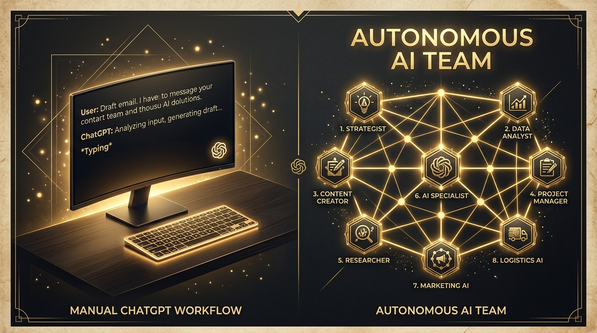
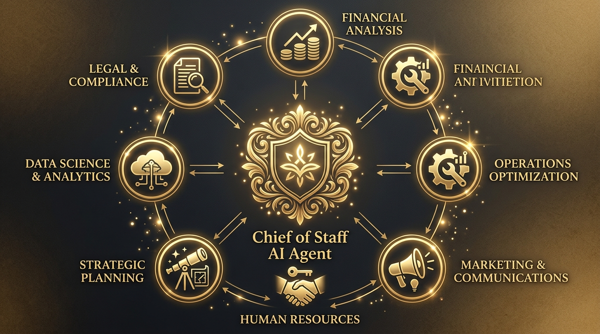

A maioria dos funcionários hoje vive na era do "ChatGPT Manual". Eles abrem a barra de chat, digitam um comando, esperam a resposta, copiam o texto, colam em um documento e depois digitam outro comando para corrigir o que a IA errou. É um processo cansativo e dependente da atenção humana.
Embora essa prática economize alguns minutos na elaboração de um relatório ou e-mail, ela não muda o jogo dos negócios. Ela apenas transforma o executivo em um operador de software mais rápido.
"O verdadeiro poder da Inteligência Artificial não está em responder perguntas em um chat, mas em agir de forma autônoma como um funcionário especializado."
A revolução silenciosa que está acontecendo nas empresas é a transição dos modelos de chat para os Agentes de IA Autônomos. Tratam-se de sistemas configurados para assumir cargos específicos na sua estrutura. Eles possuem diretrizes próprias, usam ferramentas corporativas (acessam e-mails, atualizam CRMs, pesquisam na internet) e conversam entre si para resolver problemas e entregar relatórios prontos, sem que você precise gerenciar cada clique.
Abaixo, detalhamos como desenhar uma estrutura com 8 agentes de IA autônomos que trabalham juntos por uma fração minúscula do custo de um funcionário tradicional.
A Mudança de Paradigma
Entenda a diferença crucial entre a forma antiga e a forma moderna de usar IA:
- Você precisa digitar comandos continuamente (se você não digitar, nada acontece).
- A IA esquece o contexto das conversas longas rapidamente.
- A IA não possui ferramentas de acesso direto aos seus sistemas (você precisa copiar e colar os dados manualmente).
- Apenas um executor responde por vez, sem validação ou revisão cruzada.
- Os agentes têm uma diretriz clara e permanente de trabalho (são ativados automaticamente por agenda).
- Eles mantêm um banco de memória corporativo unificado de longo prazo.
- Usam conectores automáticos (MCP) para ler relatórios, enviar e-mails e atualizar seu CRM.
- Os agentes revisam o trabalho uns dos outros antes de enviar a versão final para você aprovar.
O Organograma Digital: Os 8 Perfis de Agentes
Para construir uma organização digital de alta performance, dividimos o trabalho em 8 perfis especializados de IA. Cada um deles atua em uma função empresarial crítica, colaborando de forma autônoma.
Chief of Staff
O líder estratégico digital. Este agente atua como o principal orquestrador, recebendo tarefas gerais do fundador humano, dividindo-as em subtarefas para os outros agentes e revisando os resultados finais.
Diretor de Pesquisa
O radar de inteligência competitiva. Ele monitora novidades do setor, tendências de mercado e movimentação de concorrentes diariamente, sintetizando dados para a equipe.
Diretor de Conteúdo
O gerador de leads. Escreve artigos, boletins de e-mail informativo (newsletters) e planeja as redes sociais com base nas pesquisas do mercado feitas pelo Diretor de Pesquisa.
O Quebrador de Gelo (Prospecção de Vendas)
O caçador de clientes. Ele rastreia plataformas profissionais em busca de empresas que se encaixam no perfil ideal do cliente, qualificando leads de forma automatizada.
Gestor de Vendas (Sales Ops)
O organizador do pipeline. Ele recebe os leads gerados pelo SDR, os adiciona em sua ferramenta de vendas (CRM) e organiza a cadência de acompanhamento de propostas.
Assistente Executivo
O guardião da agenda. Filtra seus e-mails recebidos, organiza compromissos importantes de acordo com suas preferências e prepara relatórios com o resumo do seu dia.
Analista de Dados
O cientista de dados. Conecta-se aos seus bancos de dados e ferramentas de análise financeira para calcular conversões de leads e gerar previsões de receita semanais em gráficos simples.
Suporte Técnico (DevOps)
O engenheiro dos robôs. Garante que todos os outros agentes de IA permaneçam conectados e funcionais, cuidando dos backups e segurança das chaves de API.

Como a produtividade se multiplica ao migrar do chat manual individual para uma equipe de agentes.Como Eles se Coordenam Sem Gerar Caos
Uma preocupação comum dos executivos é: "Se eu tenho 8 robôs trabalhando ao mesmo tempo, como garanto que eles não vão se desalinhar ou fazer spam no e-mail dos clientes?"
A coordenação é estruturada em dois pilares principais que replicam dinâmicas humanas:
- O Painel de Tarefas Compartilhado (Kanban): Os agentes operam em um painel digital estilo Trello. Quando o Diretor de Pesquisa termina um estudo de mercado, ele move a tarefa para a coluna "Concluído". O Diretor de Conteúdo percebe a alteração, lê a pesquisa de forma automática e inicia a redação do artigo associado, movendo sua tarefa para a coluna "Em Produção". Não há reuniões ou trocas de mensagens desnecessárias.
- Grupo de Alinhamento (Telegram/Slack Privado): Os agentes reportam suas atualizações mais importantes em um grupo privado do Telegram estruturado em tópicos específicos (ex: #vendas, #conteudo, #tecnico). O Chief of Staff monitora tudo e cria um resumo diário para você.
A Jornada Operacional: 4 Dias de Execução Autônoma
Para tornar esse cenário palpável, vejamos como um ciclo de marketing e vendas acontece ao longo de uma semana comum de trabalho, exigindo apenas 15 minutos do seu tempo para revisão na sexta-feira:

A Jornada do Lead ao Relatório: Como as tarefas fluem entre agentes de segunda a sexta-feira.- Segunda-feira, 8h: O Diretor de Pesquisa inicia uma busca na internet para levantar novas tendências de mercado. Em 30 minutos, produz um relatório de oportunidades.
- Segunda-feira, 11h: O Diretor de Conteúdo lê a pesquisa e escreve um artigo de alto nível de 2.000 palavras para atrair clientes. Ele envia uma notificação no Telegram pedindo sua aprovação final.
- Terça-feira, 9h: O SDR (Prospecção) entra em ação. Ele vasculha a web e encontra 20 novos leads que correspondem exatamente à tese desenvolvida na pesquisa de mercado.
- Terça-feira, 14h: O Gestor de Vendas (Sales Ops) pega esses 20 leads e os insere no CRM corporativo, gerando a agenda de contato.
- Quarta-feira, 9h: O SDR envia uma sequência de mensagens personalizadas para cada lead selecionado.
- Quarta-feira, 15h: Diante das respostas positivas, o Assistente Executivo agenda reuniões qualificadas no seu calendário pessoal.
- Sexta-feira, 16h: O Chief of Staff compila os dados, o Analista atualiza a projeção de receita do mês e envia um relatório executivo para o seu WhatsApp pessoal. Você gasta 10 minutos avaliando o progresso e aprova o plano para a próxima semana.
Viabilidade Econômica: Custos e Retorno sobre Investimento
Qualquer líder sabe o custo de manter uma equipe humana completa de 8 pessoas para as funções descritas. No mercado brasileiro, salários, encargos trabalhistas, benefícios e licenças de software para essa estrutura facilmente superariam R$ 40.000 por mês.
Ao rodar essa operação utilizando APIs de Inteligência Artificial hospedadas de forma simples, o custo mensal do consumo dessas IAs surpreende:
| Cenário de Operação | Servidor na Nuvem (VPS) | Consumo de API de IA | Custo Mensal Estimado | Uso Recomendado |
|---|---|---|---|---|
| 1. Cenário Econômico (DeepSeek) | R$ 40,00 | R$ 60,00 - R$ 80,00 | R$ 100,00 - R$ 120,00 | Operações rotineiras simples |
| 2. Cenário Premium (Claude + GPT) | R$ 40,00 | R$ 150,00 - R$ 200,00 | R$ 190,00 - R$ 240,00 | Análises complexas e alta escrita |
| 3. Cenário com Decisão Cruzada (MoA) | R$ 40,00 | R$ 220,00 - R$ 260,00 | R$ 260,00 - R$ 300,00 | Trabalho ultra-crítico auditado |
Nota de ROI: Mesmo no modelo mais caro de decisão cruzada — onde duas ou mais IAs revisam cada resposta para erradicar alucinações de dados — o custo dificilmente ultrapassa R$ 300 por mês. Isso representa menos de 20% do custo de um único estagiário humano, entregando um volume de trabalho contínuo, ininterrupto e estruturado.
Embora a inteligência artificial autônoma consiga executar mais de 90% das tarefas operacionais do dia a dia da empresa, certas decisões estratégicas e transações financeiras devem passar obrigatoriamente por aprovação humana:
- Grandes Transações: Pagamentos de contas de fornecedores e movimentações financeiras. Os robôs podem preparar as ordens de pagamento, mas o clique de envio precisa ser seu.
- Assinatura de Contratos: Acordos legais, termos de serviço e parcerias estratégicas devem ser revisados e validados pelo fundador e conselho humano.
- Comunicação de Crises: Respostas a problemas críticos de atendimento ao cliente ou retratações públicas. O tom emocional humano e a empatia são insubstituíveis nesses momentos.
- Mudança de Modelo de Negócio: Alterações drásticas no preço de produtos ou na estratégia corporativa geral.
Como Iniciar a Transição do ChatGPT para Agentes Autônomos
A transição não exige que você aprenda a programar ou contrate uma consultoria de TI de milhões de reais. Ela exige uma mudança de postura: em vez de agir como um redator de e-mails para a IA, você deve agir como um Diretor de Negócios que distribui atribuições claras.
Os primeiros passos são simples:
- Mapeie sua semana: Identifique as 3 tarefas repetitivas que mais consomem o seu tempo (ex: pesquisar tópicos para posts, enviar e-mails de acompanhamento de vendas, criar planilhas de monitoramento).
- Defina o "DNA" do primeiro agente: Escreva um documento descrevendo as responsabilidades dele como se estivesse contratando um profissional. Por exemplo: "Você é o Diretor de Pesquisa de Mercado. Suas ferramentas são busca na web e síntese de arquivos. Sua entrega diária é...".
- Conecte as ferramentas: Use plataformas de agentes ou o framework open-source Hermes para ligar o modelo de inteligência (como o Claude ou o GPT) à sua caixa de e-mails ou ao seu painel de tarefas de forma segura.
Aprenda a Construir Seus Próprios Agentes de IA Autônomos
Inscreva-se no workshop imersivo da BottegaAI na Heineken House em São Paulo no dia 22 de Agosto de 2026. Uma experiência inspirada no Renascimento para líderes de negócios aprenderem a projetar e colocar agentes de IA para trabalhar em suas empresas.
Candidatar-se ao Workshop